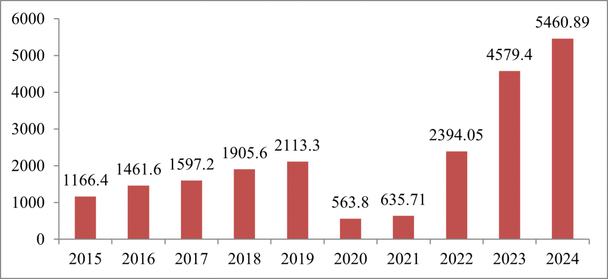

Ngành du lịch không chỉ đơn thuần là một kênh kinh tế, mà nó đã thực sự trở thành cỗ máy tăng trưởng chính, chất xúc tác cho sự chuyển mình ngoạn mục và toàn diện của thành phố Đà Nẵng. Những đóng góp của du lịch thấm sâu vào mọi ngóc ngách của đời sống kinh tế - xã hội, biến nơi đây từ một thành phố địa phương trở thành một điểm đến toàn cầu.
Du lịch là ngành mũi nhọn, đóng góp trực tiếp và ngày càng lớn vào tổng sản phẩm trên địa bàn (GRDP) của thành phố. Theo báo cáo của Tạp chí Kinh tế và Dự báo, doanh thu từ du lịch năm 2024 đạt 5460.89 tỷ đồng, với số lượng khách đạt 11,287 triệu lượt.

(Tổng cục Thống kê, 2024)
Với đặc thù là ngành sử dụng nhiều lao động, du lịch đã tạo ra hàng chục ngàn việc làm trực tiếp và gián tiếp cho người dân bao gồm lễ tân, phục vụ nhà hàng, hướng dẫn viên du lịch, nhân viên buồng phòng, nhân viên tổ chức sự kiện…; ngoài ra còn có các việc làm gián tiếp: lao động trong các ngành hỗ trợ như nông nghiệp (cung cấp thực phẩm sạch), thủ công mỹ nghệ (sản xuất quà lưu niệm), xây dựng, vận tải... góp phần quan trọng vào việc ổn định an sinh xã hội.
Nhờ sự phát triển du lịch, Đà Nẵng đã vươn mình trở thành một "thương hiệu" du lịch nổi tiếng trên bản đồ thế giới. Thành phố được các tổ chức du lịch quốc tế vinh danh với nhiều giải thưởng uy tín như "Thành phố du lịch hàng đầu châu Á", "Bãi biển đẹp nhất hành tinh". Những danh hiệu này là minh chứng sống động cho sức hút và chất lượng dịch vụ.
Du lịch tạo ra động lực kinh tế để thành phố chú trọng bảo vệ và phát huy các tài nguyên sẵn có. Các lễ hội địa phương (Lễ hội Pháo hoa Quốc tế Đà Nẵng), làng nghề truyền thống (làng đá mỹ nghệ Non Nước, làng rau Trà Quế) được đầu tư và quảng bá rộng rãi, vừa thu hút du khách vừa gìn giữ được nét văn hóa đặc sắc.